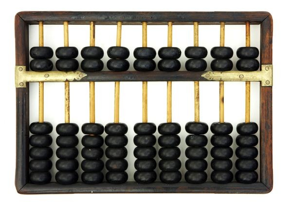
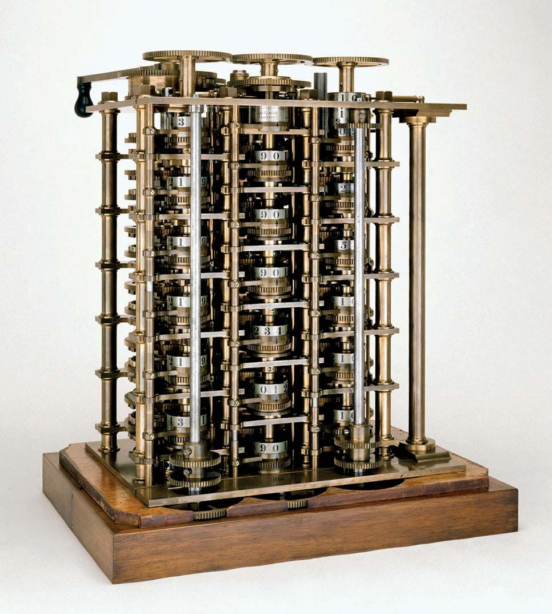
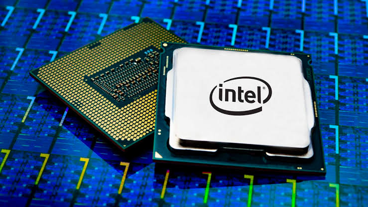

History of Computers
Since the evolution of humans, devices have been used for calculations for thousands of years. One of the earliest and most well-known devices was an abacus. In 1822, Charles Babbage, known as the father of computers, began developing what would be the first mechanical computer. Later, he designed the Analytical Engine, a general-purpose computer.
Here are some significant milestones in the history of computers:
- 1822: Charles Babbage develops the Difference Engine. 
- 1936: Alan Turing introduces the Turing Machine, laying the foundation for modern computing.
- 1945: The ENIAC, the first general-purpose electronic computer, is completed.
- 1971: Intel releases the first microprocessor, initiating the personal computer revolution. 
- 2000s: The internet, mobile computing, and cloud technologies become widely accessible.